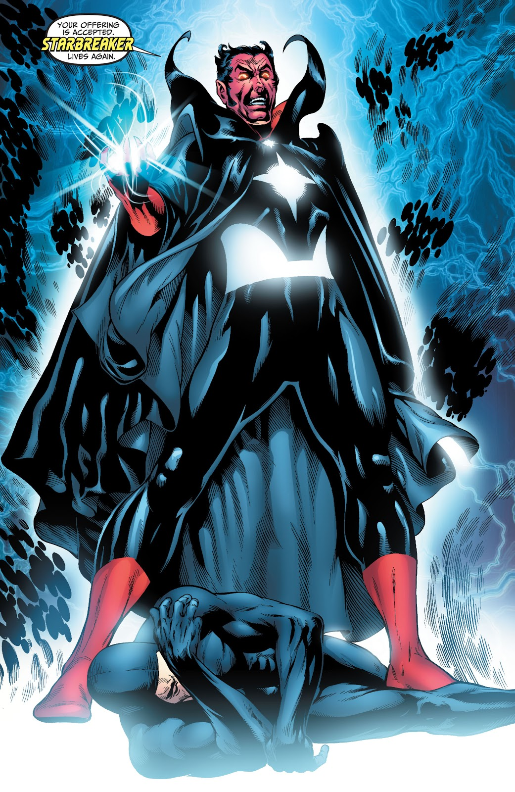

The cosmic vampire — an adult Sun-Eater.
Starbreaker
Starbreaker is hunger given a humanoid shape: a cosmic energy vampire who hurls entire worlds into their suns and feeds on the released energy — including the fear of the dying. He debuted in Justice League of America #96 (February 1972, Mike Friedrich and Dick Dillin), in a three-part epic (#96–98) that pulled Hal Jordan, the Flash, and Hawkman to the planet Rann at Adam Strange's desperate call. Starbreaker was draining Rann itself, and only the full Justice League — with Batman deducing that the vampire feeds on negative emotion and can be beaten by humanity's positive emotional energy — drove him off.
Defeated but unkillable, Starbreaker was sealed by the Guardians of the Universe themselves, his husk shot into space to drift forever. He escaped anyway, conquered the planet Almerac, and returned in the early 1990s (JLA vol. 2 #62–65) in incorporeal form — revealed at last as what he truly is: a mature Sun-Eater, the adult form of the star-devouring entities, requiring whole suns to survive. He feeds on stellar fire, on planetary energy, and on fear itself, splitting his body into duplicates to fight entire teams at once.
Few villains in the mythos operate at Starbreaker's scale. He doesn't want Hal Jordan's ring or the Guardians' throne — he wants the fuel: every star, every world, every scream of a dying civilization converted into raw power. Where other tyrants conquer, Starbreaker consumes, and the universe is his pantry.
Keep exploring
Starbreaker — DC Comics (JLA vol. 2 #32). Non-commercial fan tribute.